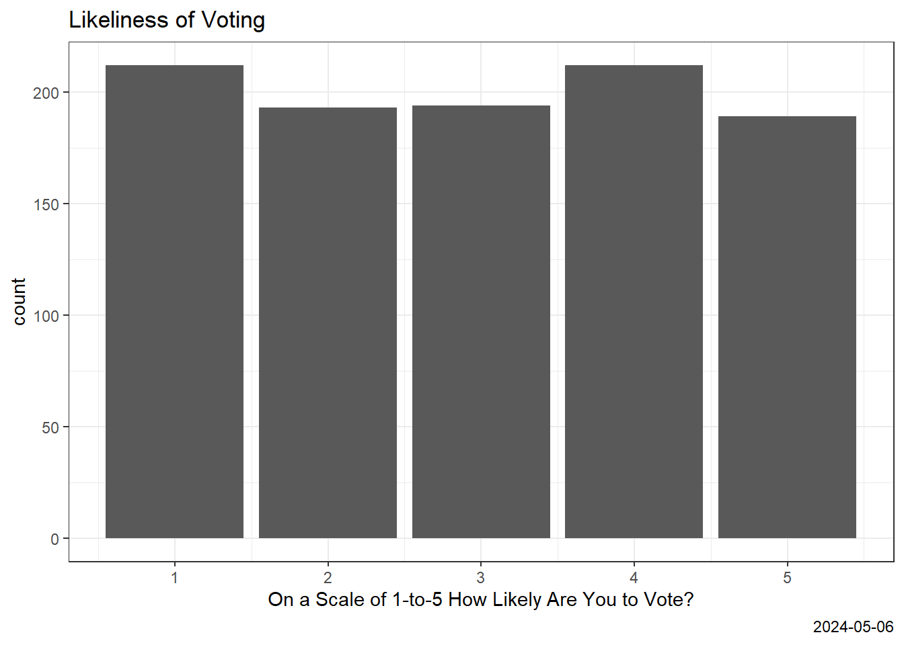

# Assignment 4 Data Vis Hackathon
# Tamnala - Dohyo Group
# Sept 27, 2022
rm(list=ls())
library(readr)
N<- read_csv("Sampling Example.csv") Rows: 1000 Columns: 5
── Column specification ────────────────────────────────────────────────────────
Delimiter: ","
chr (2): Name, Music Taste
dbl (3): Age, Political Party - Liberal (0)/Conservative (1), Likeliness you...
ℹ Use `spec()` to retrieve the full column specification for this data.
ℹ Specify the column types or set `show_col_types = FALSE` to quiet this message.Voting <- N$`Likeliness you will vote`
Genre <- N$`Music Taste`
Age <- N$Age
Party <- N$`Political Party - Liberal (0)/Conservative (1)`
library(ggplot2)
library(tidyverse)── Attaching core tidyverse packages ──────────────────────── tidyverse 2.0.0 ──
✔ dplyr 1.1.4 ✔ stringr 1.5.1
✔ forcats 1.0.0 ✔ tibble 3.2.1
✔ lubridate 1.9.3 ✔ tidyr 1.3.1
✔ purrr 1.0.2
── Conflicts ────────────────────────────────────────── tidyverse_conflicts() ──
✖ dplyr::filter() masks stats::filter()
✖ dplyr::lag() masks stats::lag()
ℹ Use the conflicted package (<http://conflicted.r-lib.org/>) to force all conflicts to become errorslibrary(viridis)Loading required package: viridisLitelibrary(gridExtra)
Attaching package: 'gridExtra'
The following object is masked from 'package:dplyr':
combinelibrary(cowplot)
Attaching package: 'cowplot'
The following object is masked from 'package:lubridate':
stampp1<- ggplot(N,
aes(x=`Voting`,
))+
geom_bar(position='dodge') +
scale_colour_brewer(palette = "Set1") +
theme_bw() +
labs(x = "On a Scale of 1-to-5 How Likely Are You to Vote?",
y = "count",
title = "Likeliness of Voting",
caption = Sys.Date())
p1